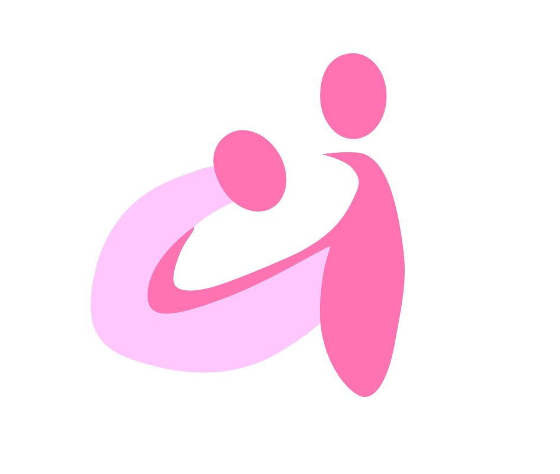

福井愛育病院
Fukui Aiiku Hospital
受診・検査・治療についてのFAQ
以下のような症状がある場合は、ぜひご相談ください：
「怠けている」のではなく、医学的な原因がある可能性があります。一人で悩まず、まずはご相談ください。
主な対象は10代〜20代の思春期・青年期の方ですが、頭痛に関しては何歳でも診療します。
当院は小児科併設の病院ですので、お子様から青年期の方まで、安心して受診していただけます。20代以降の方もお気軽にご相談ください。
初診の方は、事前にお電話でご相談ください。
専門外来のため、予約制となっています。お電話で症状をお伺いし、適切な診療日時をご案内いたします。
電話：0776-54-5757
受付時間：8:00～18:00
以下のものをご持参ください：
症状の経過やきっかけなど、メモしておくとスムーズです。
必ずしも全員が受ける必要はありません。
まず外来で医師が詳しく診察し、検査が必要かどうかを判断します。ナルコレプシーや特発性過眠症が疑われる場合、確定診断のために検査をお勧めすることがあります。
痛みはまったくありません。
頭や身体にセンサーを貼り付けるだけで、痛みや苦しさはありません。普段通りに寝ていただくだけです。
当院は小児科併設の病院ですので、お子様でも安心して検査を受けられる環境を整えています。不安なことがあれば、スタッフに何でもご相談ください。
退院後、約2〜3週間後の外来で結果をご説明します。
PSG・MSLT検査のデータは専門医が詳細に解析する必要があるため、結果が出るまで時間がかかります。結果をもとに、最適な治療方針をご提案します。
症状や診断によって異なります。
片頭痛の場合、薬物療法で数週間〜数ヶ月で改善が見られることが多いです。ナルコレプシーなどの睡眠障害は、長期的な治療が必要になることがあります。
定期的に経過を確認しながら、お一人おひとりに最適な治療を提供します。
診断書や意見書の作成が可能です。
学校や職場に病状を理解してもらうための診断書や、配慮をお願いするための意見書を作成できます（別途文書料が必要です）。
必要に応じて、学校との連携もサポートいたします。
もちろん、ご相談ください。
頭痛や睡眠障害は、一般的な検査では異常が見つからないことが多い疾患です。当院では、専門的な視点から詳しく診察し、適切な診断と治療を提供します。
「異常なし」と言われても症状が続く場合は、専門医の診察を受けることをお勧めします。
はい、全国から患者さんが受診されています。
頭痛専門医と睡眠専門医の両方の資格を持つ医師が診療する施設は全国でも少なく、遠方からお越しの方も多くいらっしゃいます。
PSG・MSLT検査は1泊2日の入院が必要ですが、その後の通院頻度についてはご相談に応じます。
上記以外の質問や相談がございましたら、お電話でお問い合わせください。